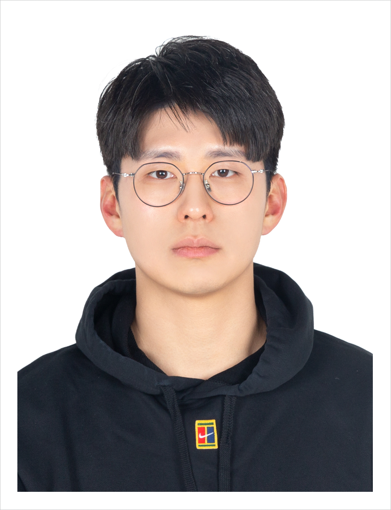

|
Jeonghun Park
|
 |
Jeonghun Park, Ph.D.
Assistant Professor
Yonsei University
School of Electrical and Electronic Engineering
Seoul, Republic of Korea
Office: C532 (3rd engineering building)
Email: jhpark AT yonsei DOT ac DOT kr
[Google Scholar]
|
I am an assistant professor in
School of Electrical and Electronic Engineering
at
Yonsei University.
I am interested in a diverse range of topics within wireless communications, signal processing, sensing, and machine learning, covering both theoretical foundations and practical implementations. My work involves utilizing a variety of mathematical tools, including matrix theory, large-scale optimization, sampling, information and communication theory, digital signal processing, and stochastic geometry. My objective is to develop effective algorithms and analyze wireless systems, with a focus on enhancing efficiency.
Some of my current research topics are:
New MIMO for 6G and beyond
AI-native RAN – AI for wireless, wireless for AI
Satellite network analysis and design
Current service:
Previous service:
News
Events/Grants/Travel
Sep. 2026: Prof. Park has been appointed as an Editor of IEEE TGCN.
Aug. 2026: Hyeongtak has been selected for the National Scholarship for Outstanding Ph.D. Students in Science and Engineering. Congratulations! [Link 1] [Link 2] [Link 3] [Link 4]
Jul. 2026: We presented two papers at the IEEE ISIT 2026. Congrats to Jeongwoo and Seongkyu on their first conference presentations! [Link]
Jun. 2026: Seongkyu, Chaehyun, and Juntaek have been selected for the AI Seoul Tech Research Support Program and will receive a scholarship. Congratulations!
Apr. 2026: Prof Park has received the 2025 Outstanding Lecture Award.
Feb. 2026: Prof. Park has been appointed as an Editor of IEEE TWC.
Feb. 2026: Subin has received the Silver Prize at the Samsung Humantech Paper Award. Congrats to Subin! [News]
Papers
Nov. 2026: We submitted “MIMO Integrated Sensing and Communication: A Fisher-based Local Mutual Information Approach.” [Arxiv]
Nov. 2026: Our paper “Learning MMSE Filters for OFDM Channel Estimation: Attention Transformer Gains at Linear Inference,” is accepted to IEEE TWC! [Arxiv] [Github] Congrats to TaeJun!
Nov. 2026: We submitted “Soft-then-Hard: Joint Link Association and Precoding Optimization for LEO Satellite Networks.” [Arxiv]
Oct. 2026: We submitted “Spatial MIMO Channel Rendering: A 3D Gaussian Splatting Approach.” [Arxiv]
Oct. 2026: Our paper “Space-Time Adaptive Beamforming for Satellite
Communications: Harnessing Doppler as New Signaling Dimensions” is accepted to IEEE TWC! [Arxiv] Congrats to Hyeongtak!
Sept. 2026: We submitted “Fronthaul Compression for Cloud RAN Architecture with Finite Alphabet Inputs: A Reverse Mercury/Waterfilling Approach.” [Arxiv]
Sept. 2026: We submitted “Load Balancing in Multi-Shell LEO Satellite Networks with Successive Interference Cancellation.” [Arxiv]
Sept. 2026: Our paper “Attention-Aided MMSE with Ridge Denoiser: How to Train under Noisy Channel Samples” is accepted to IEEE TVT! [Arxiv] Congrats to TaeJun!
Aug. 2026: Our paper “Energy-Efficient State Estimation with 1-Bit Sensing: A Bussgang-Kalman Framework for Internet-of-Things,” is accepted to IEEE IoTJ! [Arxiv] [Github] Congrats to Chaehyun!
Jul. 2026: Our paper “Fractional Programming for Kullback-Leibler Divergence in Hypothesis Testing” is accepted to IEEE TSP! [Arxiv] Congrats to Jeongwoo!
Openings
Appointments
Assistant Professor, School of Electrical and Electronic Engineering, Yonsei University,
Mar. 2023 - Present
Assistant Professor, School of Electronic Engineering, Kyungpook National University,
Feb. 2019 - Feb. 2023.
Senior Engineer, Wireless R&D, Qualcomm (San Diego),
Sep. 2017 - Feb. 2019.
Ph.D. in Electrical and Computer Engineering, University of Texas at Austin,
Sep. 2013 - Dec. 2017.
M.S. in Electrical and Electronic Engineering, Yonsei University,
Mar. 2010 - Feb. 2012.
B.S. in Electrical and Electronic Engineering, Yonsei University,
Mar. 2006 - Feb. 2010.
|